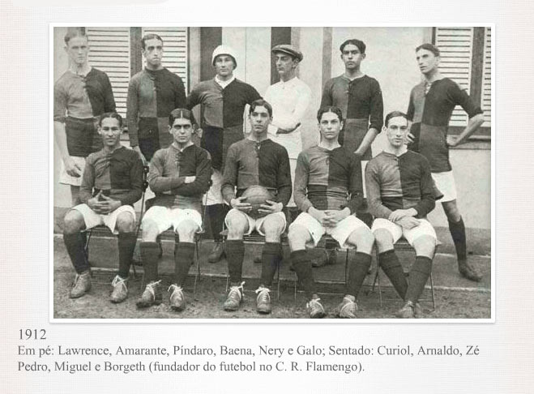

História do Clube de Regatas do Flamengo
O Flamengo foi fundado em 1895, inicialmente como um clube de regatas.
Em 1911, iniciou suas atividades no futebol, se tornando um dos maiores clubes do Brasil.
Conhecido pela sua imensa torcida, é apelidado de "Mais Querido do Brasil".
O time tem como cores o vermelho e o preto, presentes em seu escudo e uniforme.
O estádio oficial é o Maracanã, palco de grandes conquistas e clássicos.
A torcida do Flamengo é apaixonada e conhecida por seu amor incondicional ao clube.
Na década de 1980, o time viveu sua era dourada com Zico e grandes conquistas.
Recentemente, o clube voltou ao protagonismo nacional e internacional com títulos importantes.
Além do futebol, o clube também atua em outras modalidades como basquete e remo.
A história do Flamengo é marcada por paixão, raça e uma torcida fiel que nunca abandona.
